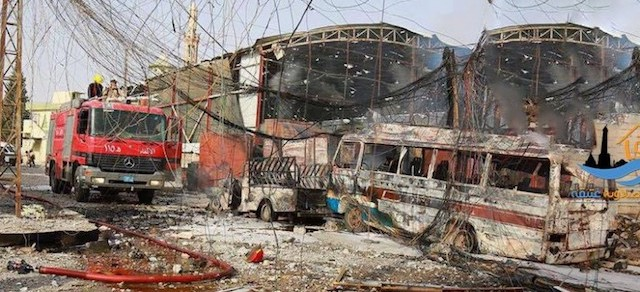

2017-06-10 08:00

Britain was still in the grip of the May 23rd suicide bombing in Manchester which claimed twenty-two lives. Tory Prime Minister Theresa May was running on a “fear and crackdown” platform in the last days of her collapsing campaign, even promising to curtail civil liberties “if they get in the way” of cracking down on terror.
Not to be out-done American Defense Secretary “Mad Dog” James Mattis was promising a policy of annihilation toward ISIS, telling West Point cadets, “Manchester’s tragic loss underscores the purpose of your years of study and training at this elite school. […] We must never permit murderers to define our time or warp our sense of normal. This is not normal.”
It was a perfectly normal day in the War on Terror. Where killing civilians has become the new normal. Not only for ISIS but for the United States and its allies.
Although the U.S. admits killing only 352 civilians, human rights groups that track the civilian slaughter put the number closer to 4,000. But for Mattis civilian deaths are just too damned bad when one is waging just war (the West’s word for jihad) against ISIS. Appearing on Face the Nation Mattis commented, “Civilian casualties are a fact of life in this sort of situation.”
The “sort of situation” Mattis means is the permanent war the United States has been waging in the Middle East for going on 30 years.
The savagery of ISIS-encouraged suicide bombings, drivers plowing through pedestrians on crowded bridges and, in one case, three attackers setting upon one woman with knives, is enough to sicken anyone. But if we look at ISIS attacks somewhat dispassionately, this is simply asymmetric warfare.
This is how people fight when they don’t have an air force or SEAL teams to slaughter civilians the “proper” way.
Two weeks ago the Pentagon admitted it had killed two ISIS snipers in the al Jadidah district of Mosul, Iraq – with “collateral damage” of 100 civilians. In Yemen, the U.S. military killed five civilians, including a blind seventy year-old man. This followed another disaster in Yemen last January in which SEALs killed twenty-five civilians, including fleeing children. Regardless of which news outlet covered it, the civilian deaths were downplayed. If it’s not on TV, it’s not real.
Most Americans think that the war in Yemen is just another fight against ISIS but it is in fact a civil war, and it involves a Shi’a insurgency in the south being put down by a Saudi-allied dictator in the north. It is fair to call it a proxy war between Saudi Arabia and Iran – one into which we have poked our noses.
After all these screw-ups CENTCOM was recently forced to undertake some damage control, so it released figures claiming that, regretfully, 484 civilians have been killed. But regardless of the number – whether 484 or 4,000 – U.S.-led wars have displaced, killed, and terrorized millions of people throughout the Middle East. In Mosul alone 200,000 people were driven from their homes. In Syria, half the population are refugees.
In Syria, the U.S. has stepped up indiscriminate bombing of civilians in Raqaa. In Tabqa, a nearby town, eleven people – “including eight members of the al-Aish family: three women between the ages of 23 and 40, and five children, the youngest one just 6 months old” – packed themselves into a vehicle to flee from U.S. bombing. They didn’t make it. They were hit with heavy machine gun fire by a U.S.-led coalition forces. It was a tragedy local reports called a “massacre.”
Or, as Mad Dog Mattis might call it, Annihilation.
But if you really want to do repression and terror right, there’s nothing like State Terror. And the United States and its “allies” throughout the region are the undisputed experts. The Saud family, which owns and runs Saudi Arabia as a family-owned and operated kleptocracy, is barely distinguishable from ISIS in its repressive version of Wahhabism. Shortly after Donald Trump visited the country, the kingdom announced it would expand the use of the death penalty for peaceful protest.
Appearing with Donald Trump and Saudi King Salman in Riyadh, all touching a curious glowing orb together, was Egyptian dictator Abdel-Fattah el-Sisi, who is cracking down on protests and journalists. In Egypt, where Al Jazeera journalist Mahmoud Hussein is now beginning his seventh month of prison, el-Sisi has also severely restricted the ability of NGOs, particularly those focused on human rights, to operate.
I could go on about Erdogan and Duterte, two of Donald Trump’s favorite thugs, but what’s the point? America’s commitment to human rights is hypocritical. The same Trump who was wined and dined by the Saudis – where no one dares challenge the royal family – criticizes Venezuela for repression and calls for free elections. The same U.S. government, outraged by Cuba’s treatment of political prisoners, has looked the other way at Israel’s imprisonment of almost a million people since 1967, where 40% of all Palestinian men have been in jail.
* * *
While Conservative PM Theresa May was campaigning on fear and xenophobia, crackdowns and ditching civil liberties, Jeremy Corbyn was campaigning on fresh ideas and offering unpleasant truths.
One of Corbyn’s truths was that the War on Terror is a failure. And that only a new foreign policy can solve the problem:
“Many experts, including professionals in our intelligence and security services pointed out the connections between wars that we’ve been involved in or supported … in other countries, such as Libya, and terrorism here at home.”
And how can anyone really refute his argument? Killing civilians, propping up dictators, wrecking entire countries, and creating millions of refugees doesn’t make you any friends.
This is why they hate us. This is why they fight us.
If we really want to end terrorism, we’d better stop terrorizing other people ourselves.